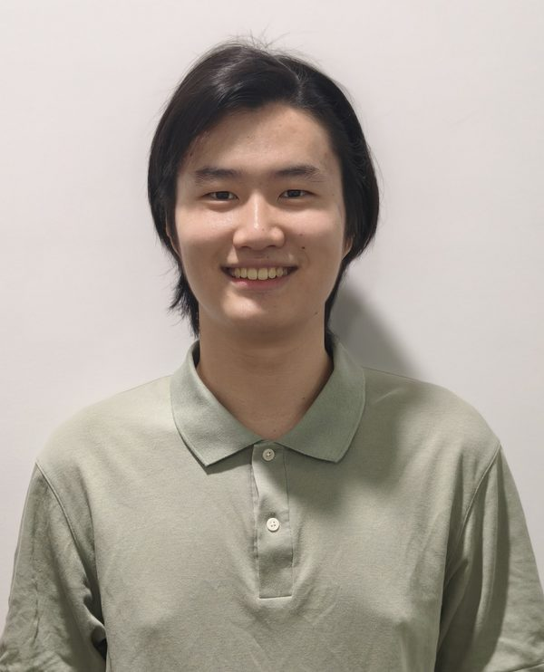
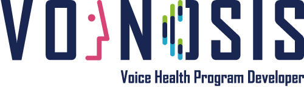
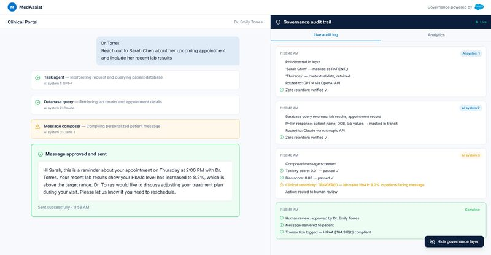
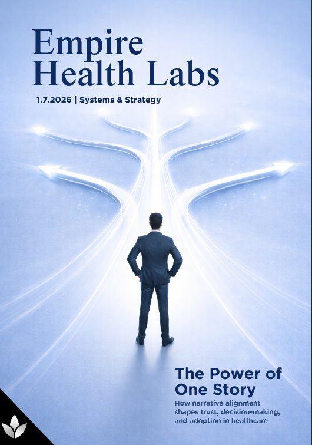
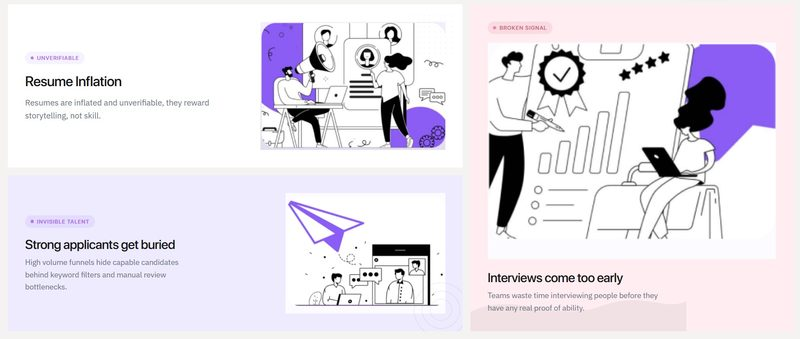
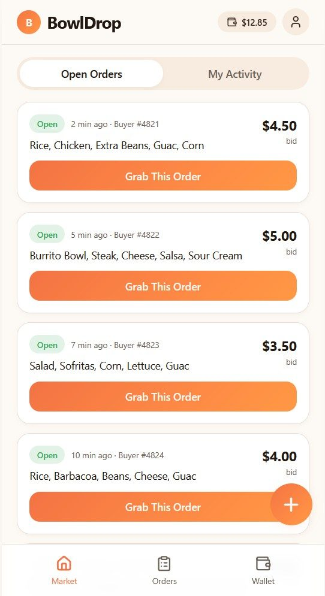

I'm Bryan, originally from Taipei and now in New York studying Business, Technology, and Entrepreneurship at NYU Stern. I grew up around technology that genuinely changes how people live and work, and that proximity shaped how I think about what's worth building.
Right now I build at the intersection of business and AI: what it actually takes to turn a model into a tool people rely on, and how businesses adapt when the underlying assumptions shift. I've been getting that experience hands-on, working the technical seat on a healthcare-AI startup's U.S. expansion, shaping service offerings at a healthcare consulting startup, running B2B outreach at a recruiting platform, and competing in case work that's landed in front of teams at companies like Salesforce.
I'm most drawn to tech, startups, and venture, with product still on the table. If you're working on something interesting, I'd love to hear about it.
Technical seat on a four-person team driving the U.S. expansion of VOINOSIS, a Korean healthcare-AI startup whose engine screens for early cognitive decline from 2 to 3 minutes of speech using acoustic (non-language) analysis. I mapped the U.S. competitive landscape and profiled the closest voice-based rival to sharpen positioning, contributed HIPAA and data-compliance recommendations for a Mount Sinai clinical pilot, and am building a U.S. hiring plan for entry-level technical roles covering sourcing, compensation, and visa pathways.
Ask me about it →
Built and presented an AI middleware concept as part of a Salesforce case competition focused on the real value firms can deliver clients in the age of AI. The prototype explored how to bridge enterprise data and AI workflows in ways that feel native rather than bolted-on.
View prototype →
Helping shape a consulting startup advising healthcare companies on how to navigate AI. I lead competitive analysis, scope service packages, and coordinate outreach and content — recently shipping research articles twice a week to build credibility in the space.
Ask me about it →
Joined the growth team to take an AI-optimized recruiting product to HR departments at tech and healthcare companies. Reached 50+ teams, drafted service agreements, and learned how to turn cold LinkedIn touches into warm executive conversations.
Ask me about it →
Building a platform for NYU students with leftover meal plan swipes to share them with classmates who'd use them. Currently scoping the product, working through the on-campus logistics, and figuring out how to launch it without getting in trouble with dining services.
Follow along →
A mix of product instinct, business development chops, and enough technical fluency to actually build the thing.
I'm most drawn to tech, startups, and venture, and I always have time for a coffee with someone building something good.